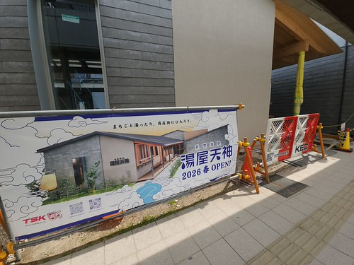
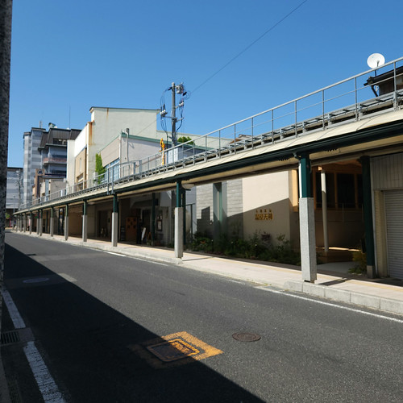
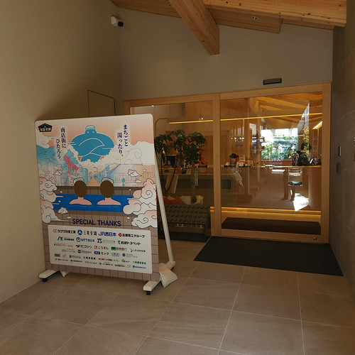
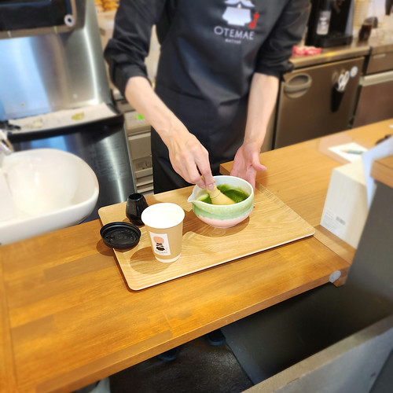
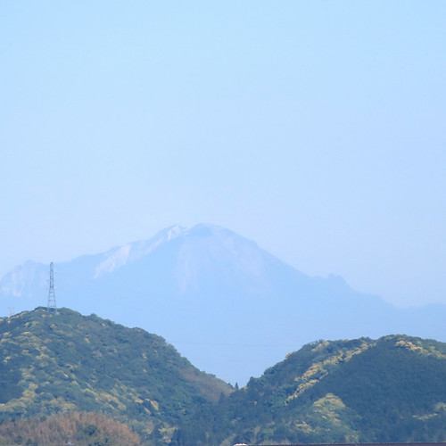

暑熱順化は5月から？（お散歩カメラ 2026-05-16）

Bluesky の TL に「暑熱順化」の単語をチラホラ見かけるようになった今日この頃1。 皆様いかがお過ごしでしょうか。 もうそんな季節になっちゃったんだねぇ。
というわけで，今回は久しぶりに温泉に行った話。 まだ自転車に乗れない状態で随分ご無沙汰だったけど，新しく街中にできた温泉施設に行ってみたよ。
商店街の温泉「湯屋天神」
以前雨粒御伝を巡るお散歩で見かけたのだが

この温泉施設「湯屋天神」が GW 明けに開業したらしい。 テレビっ子の同居人が教えてくれた。 行列ができるほどだったそうで「温泉に行列すんなよ」とツッコミを入れてしまった（笑）
午前中の用事を済ませていったん JR 松江駅までバス移動。 そこからてくてく歩いて天神町商店街へ。

ここバス路線なんだぜ（笑） 子供の頃はもっと賑やかだったんだけどなぁ。 では，写真の右に見える湯屋天神に入ろうか。

日帰り温泉は，平日700円，土日祝は900円とちょっと高め。 サウナはプラス800円。 温泉施設なのでボディシャンプー等は備え付けられている。 タオルは330円で販売されているので，手ぶらでもOK。
町家造りっぽい建物で奥が深い構造になっている。 さすがに露天風呂はなかったがサウナ施設の上がテラスになって良さげな感じだった。 私はサウナ料金を払ってないので利用しなかったけど。
お風呂上がりはやはりコーヒー牛乳でしょ。
ちゃんと瓶だよ。 木次乳業さん，いつもお世話になっています。 湯屋天神では飲み物は自販機じゃなくてカウンタで注文する。 白バラのアイスクリームも売ってたよ。 アルコールもあったが軽食はなし。 先にどこかでお腹を満たしてから行くのがおすすめである。
松江城に来たなら…
温泉でさっぱりしたし，次は松江城に行こう。OTEMAE MATSUE 湯船で左脚をマッサージしたせいか徒歩が軽い 💛
松江城まで来たなら抹茶ラテだろう。 以前にも行った船着き場にある OTEMAE MATSUE へ。

こんな感じに，実際にお抹茶を点てて作ってくれるんだぜ。 今回は温かいのを頂いたが，甘くなくて美味しい。 また来よう。
この日は大気の透明度が比較的高く，松江城本丸から大山がよく見えた。

写真じゃイマイチ分かりにくいか。
今回はあまり歩かなかった気がするが，それでも1万歩は超えてたので，よかったことにしよう。 もっと楽々歩けるようにならないとな。
-
「暑熱順化」を英訳するとどうなるのって AI に訊いたら “Heat acclimation” と “Heat acclimatization” の2つを挙げてくれた。 acclimation と acclimatization の違いは人工的な環境での訓練等による適応か自然環境での適応かの違いらしい。 Copilot には「生活実感の記事なら acclimatization がより自然」とアドバイスされた。参考：暑熱「順化 (Acclimation)」、「馴化 (Acclimatization)」? | Innervate The World! ↩︎